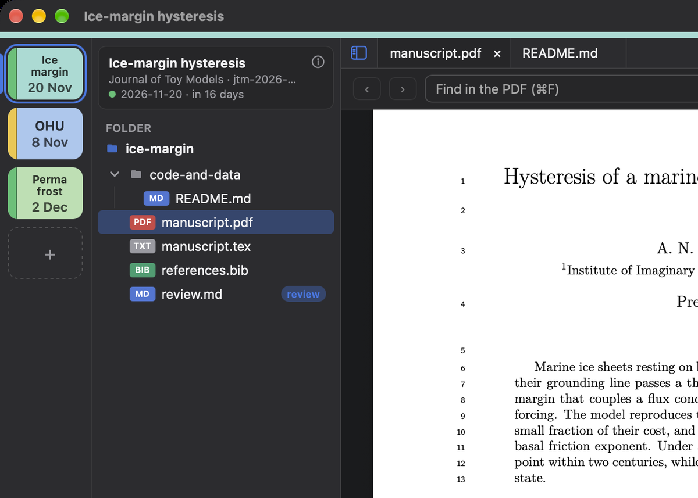
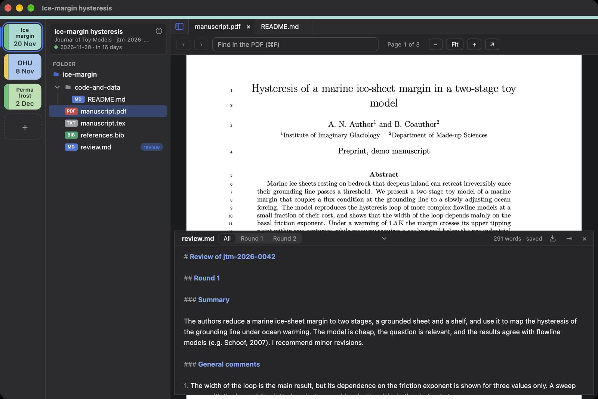
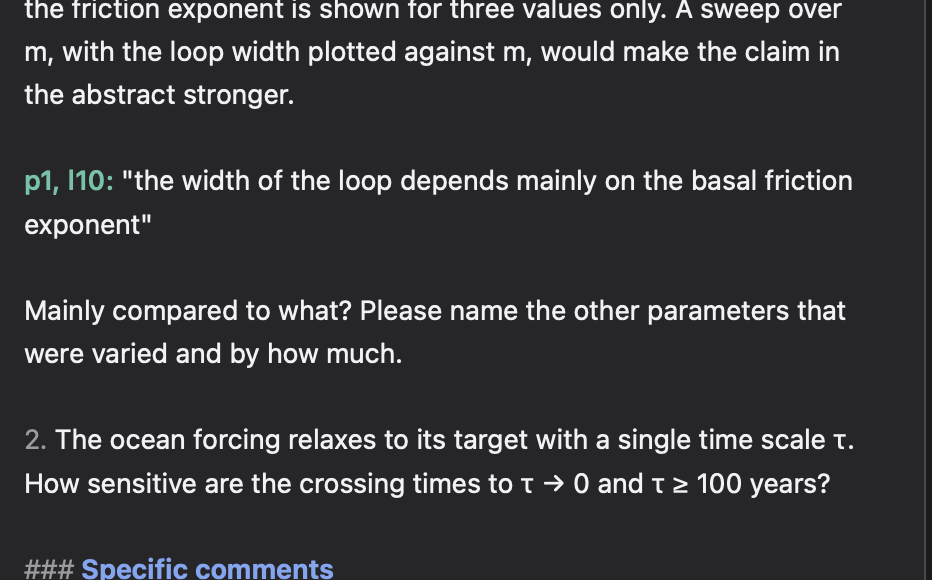

A project is a folder
The manuscript and its versions, the supplement, code and data, the editor's letter, and the review. Files
that live elsewhere are linked, not copied. The one file of the app is review.toml: the
journal, the manuscript ID, the due date, the colour.
Put the folder in Google Drive, Dropbox or iCloud if you like. Files are written whole, and read again when
they change on disk.

The review pane
⌘J brings up a Markdown editor over the PDF, at the bottom or on the right, and takes it away
again. The PDF keeps its size.
Headings make tabs: ## Round 1, ## Round 2. Each shows its section alone, and the
review stays one file. It is saved as you type.

Quotes with page and line
Select text in the PDF and press ⌘U: it goes into the review as a quote, with its page and the
line numbers of the manuscript, p. 5, ll. 136–138. ⌘Y does the same without the
quotation marks.
Everything stays plain text, so it pastes into a journal's web form as it is.

Typed symbols
-> becomes →, <= ≤, CO_2 CO₂, ^-1 ⁻¹. After a
LaTeX name, Tab as in the Julia REPL: \alpha α, \Delta Δ,
\times ×. ⌘Z gives back what you typed.
Export
As a PDF on an A4 page, kept in the project's export/ folder, or as plain text on the
clipboard for a journal form. A round alone, or the whole review. Anonymous unless you sign it.
Several reviews at once
The project bar has a tile for each review, with its due date and a bar for how near it is. A colour bar,
set in Settings, tells the app's windows apart from others.
New from a PDF
Drop a manuscript on the app: the folder is made, named after the manuscript ID, and its title, journal
and ID are filled in from the DOI.
Updates built in
The app looks for new versions and installs one when you ask. Signed updates, nothing in the
background.
Open source
Free software under the MIT license, written in Rust with Tauri.